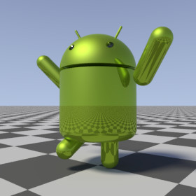

{kind=link}
{kind=link}

A library module from the Persistence of Vision Ray Tracer (POV-Ray) Object Collection.
A 3-D model of Google’s Android™ robot, with posable head and limbs.
The italicized nnnnnn in some of the file names represents the 6-digit number that is in the name of the .zip file.
| Key Files | |
|---|---|
| File | Description |
androidrobot.html |
The user manual (this document) |
androidrobot.inc |
The AndroidRobot software |
androidrobot.jpgandroidrobot_posed.jpg |
Sample output |
androidrobot.povandroidrobot_posed.pov |
Demo scene files |
READMEnnnnnn.html |
Important information about using the POV-Ray Object Collection |
| Other Files | |
| File | Description |
androidrobot.css |
A file used by the user manual |
androidrobot_description.txt |
A brief description of AndroidRobot |
androidrobot_keywords.txt |
A list of keywords |
androidrobot_prereqs.txt |
Prerequisites (empty file) |
androidrobot_thumbnail.png |
An illustration for the user manual |
cc-LGPL-a.png |
Administrative files |
Versionnnnnnn.js |
|
Note for users of older versions of AndroidRobot: Files androidrobot_cc-lgpl.png and droid.pov are no longer used, and androidrobot.png has been replaced with androidrobot.jpg.
AndroidRobot requires POV-Ray version 3.5 or later.
All file names in this module and all global and local identifiers defined in androidrobot.inc comply fully with the Object Collection naming standards, as revised August 2008 and proposed August 2012. The prefix for this module is “androidrobot,” including any uppercase and lowercase variants; to avoid conflicts, do not declare identifiers in your scene file that start with this prefix plus an underscore.
assumed_gamma in global_settings{} prior to the next step, or you will get a parse error.
#include "androidrobot.inc"Including the file more than once is harmless, though unnecessary.
Creates an untextured robot. The robot faces the x-direction and the
bottom of the robot is at ANDROIDROBOT_V_BASE.
Use_merge:
yes, the robot will be composed using CSG merge.
If no, then CSG union will be used. In general, pass
yes if the robot is to be transparent, no otherwise.
Returns the radius (float) of the eyes’ cylindrical sockets.
Returns the point (vector) where the central axis of the left eye’s cylindrical socket intersects the dome of the head.
Returns the dome on which the robot’s head is based. This is useful for developing eyes or other facial features.
Outset:
Returns a transformation that is suitable for facial features. Apply this macro to facial features if you have applied a transformation to the robot’s head with macro AndroidRobot_Posed(). (Do not apply the head’s transformation directly to the facial features, as this will not work properly for some transformations.)
x_Head:
x_Head argument passed to AndroidRobot_Posed().
union
{ AndroidRobot_Posed
( no, MyHeadRotation,
transform{}, transform{}, transform{}, transform{}
)
union
{ object { UserDefinedEye translate AndroidRobot_Eye_v() }
object { UserDefinedEye translate AndroidRobot_Eye_v() * <1, 1, -1> }
// transform { MyHeadRotation } // Wrong!
AndroidRobot_Head_x (MyHeadRotation) // Correct
}
pigment { ANDROIDROBOT_C_COLOR }
}
See the demo scene file androidrobot_posed.pov for a complete example.
Creates an untextured posable robot.

See the demo scene file androidrobot_posed.pov for an example of how to use this.
For backward compatibility, AndroidRobot_posed() is also accepted.
Use_merge:
yes, the robot will be composed using CSG merge.
If no, then CSG union will be used. In general, pass
yes if the robot is to be transparent, no otherwise.
x_Head:
x_Left_arm:
x_Right_arm:
x_Left_leg:
x_Right_leg:
This parameter may be #declared by the user prior to using the macros.
| Parameter | Type | Description | Default |
|---|---|---|---|
AndroidRobot_Version |
float | A backwards compatibility setting to select the modeling of the robot according to the version of AndroidRobot:
|
3.0 |
| Identifier | Type | Description |
|---|---|---|
ANDROIDROBOT_C_COLOR |
color | The gamma-adjusted official Android Web color. Use this if:
Warning: If you are using POV-Ray 3.62 or older, the gamma adjustment will be incorrect if |
ANDROIDROBOT_C_RAWCOLOR |
color | The official Android Web color #A4C639, without gamma adjustment. Use this if:
|
ANDROIDROBOT_HEIGHT |
float | The height of the unposed robot, not including the antennae. |
ANDROIDROBOT_V_BASE |
3-D vector | The location of the bottom of the unposed robot. |
Any identifiers in androidrobot.inc that are not documented in this manual are considered “private” or “protected,” and are subject to change or elimination in a future update.
| Version | Date | Notes |
|---|---|---|
| 1.0 | 2009 October 30 |
|
| 2.0 | 2011 July 23 |
|
| 2.1 | 2012 June 26 |
|
| 2.1a | 2012 June 28 |
|
| 2.2 | 2014 October 5 |
|
| 3.0 | 2015 April 25 |
|
| 3.0a | 2015 April 27 |
|
{kind=link}